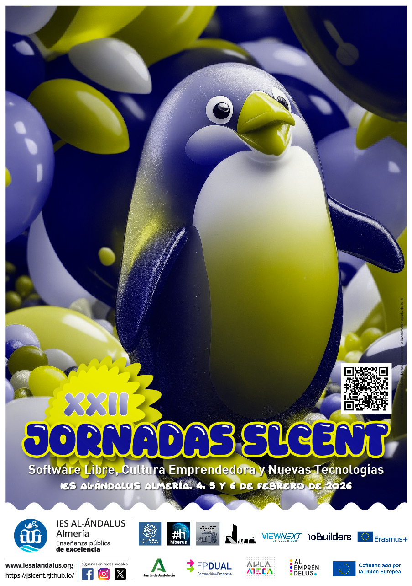

Colaboradores


4, 5 y 6 de Febrero de 2026
IES Al-Andalus

Las XXII Jornadas SLCENT son un evento anual que reúne a profesionales y entusiastas de la educación y la tecnología. Durante tres días, se llevarán a cabo conferencias, talleres y mesas redondas enfocadas en las últimas tendencias y mejores prácticas en el ámbito educativo.
Acercar a las novedades e innovaciones tecnológicas del sector de la informática y del Software Libre.
Complementar la formación académica, competencias y perfil profesional del alumnado, centrándose en los ciclos Formativos de Informática.
Compartir el conocimiento y fomentar relaciones de colaboración sin barreras.
Promover el uso de tecnologías abiertas y colaborativas en el ámbito educativo.
Facilitar el networking entre profesionales, estudiantes y empresas del sector tecnológico.
Impulsar la transferencia de conocimiento y experiencias prácticas en el mundo laboral.
16:15 - Apertura para asistentes
16:30 - Inauguración de las jornadas
17:00 - ViewNext - IA Generativa, la vitamina del sector IT y mucho más
17:45 - Carlos Santisteban (La Jaquería) - Cómo montárselo en épocas de carestía de recursos
18:30 - Federico Martínez - Formación Dual a través de Erasmus
19:15 - Descanso - Charlas Rápidas
19:30 - Almería Tech - Code your Cloud: el futuro de la Infraestructura como Código impulsada por IA
20:15 - Cierre del primer día
09:15 - Apertura para los asistentes
09:30 - Jose Antonio Álvarez Bermejo - Inteligencia, defensa y supercomputación
10:15 - Jesús Marín - Construyendo una estrategia de seguridad y cumplimiento en AWS
11:00 - Descanso 30 minutos
13:00 - Enrique Fernández - La empresa como herramienta de vida
13:45 - Cierre del segundo día
16:15 - Apertura para los asistentes
16:30 - Carlos Barbero-Cortés - Introducción a la globalización e internacionalización
18:15 - ViewNext - Programando con IA generativa
19:15 - Descanso 15 Minutos
19:30 - Patricio García Avendaño - Entendiendo el ransomware a través de la ingeniería inversa
20:30 - Hiberus - De la Vida al Modelo
21:30 - Despedida y cierre de las jornadas
09:00 - Visitas de alumnos del centro y de otros centros, para ver los trabajos realizados por los alumnos del curso de especialización (Aula Ateca)